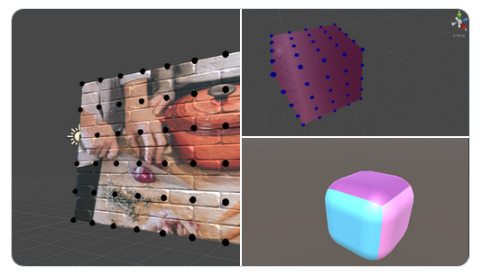
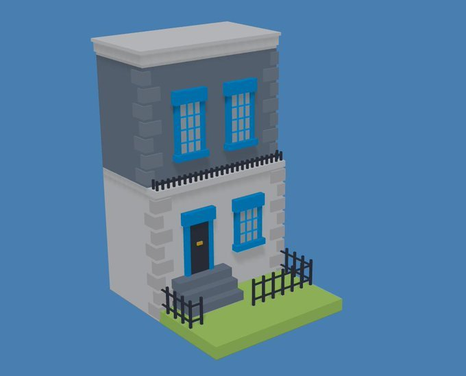
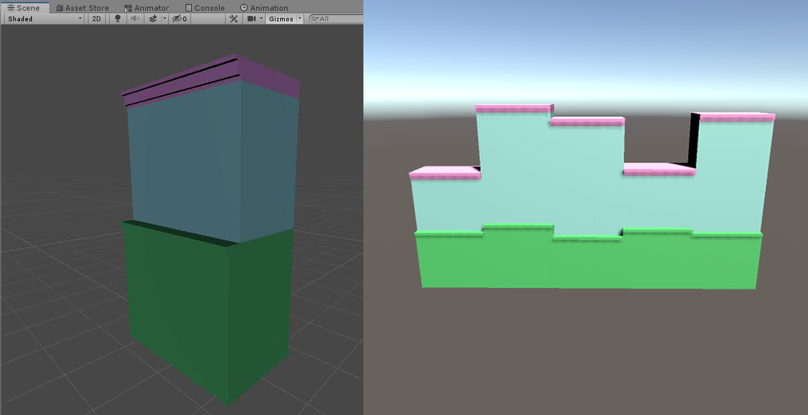
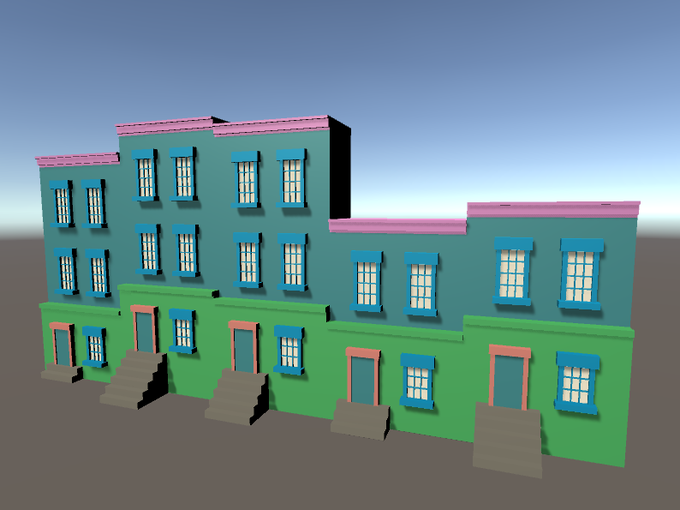
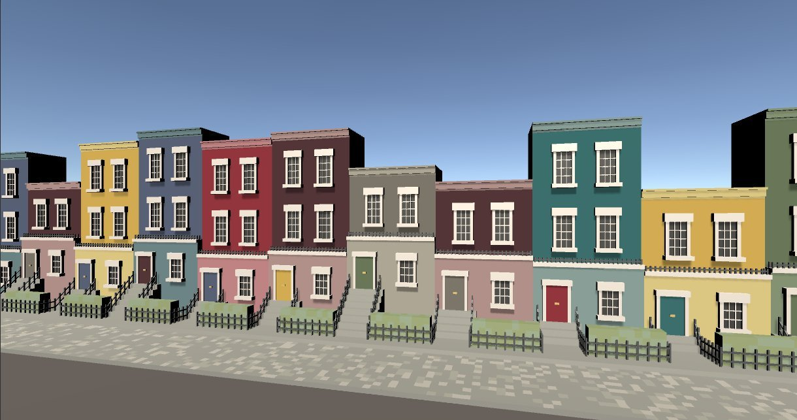

Procedually Generated Town Houses
Jan 9, 2020 // #proc gen
As I continued to learn more about Unity last Autumn, I stumbled upon mesh generation, a way of procedually generating simple levels and models without using a 3D modelling programme. Procedual generation, by itself, allows developers to create random level after level as the data for it is created algorithmically instead of manually.
I began by going through Cat Like Coding’s Tutorial on Mesh Generation, which teaches the basics of creating planes, and cubes and rounded corners. Then I did Oli Carson’s Udemy course on procedual generation, to create a race track. Together both of these gave me a good, basic understanding of how to create planes, and plot vectors to build basic models.

Earlier in the year I had discovered three.js and built a little townhouse, by plotting a lot of box geometry. So I set myself the task of recreating this in Unity, and adding some randomness, to make a whole street of little houses.

I sketched quite a lot through this, to try and work out the best way to construct the houses. They’re based various Victorian townhouses around the UK, if I look down the street I live on (an 1870s terrace), I can see houses of so many heights and styles, so the varying floors and steps is actually quite accurate. I gave all the houses either two or three floors, and between two and eight steps to give a softer randomness.

Next I built windows and doors, and added fences and pavements. Now, I have a problem telling my left from my right and during this process, it showed. Trying to plot the positions of each bit of these cubes was a headache. But I got there eventually, and each house can now enjoy a view of the Unity skybox.

Finally I chose the colours. They all came from the Farrow and Ball website, they make nice house paint, and their website makes it easy to grab the hex codes for the colours. And they have sections with colour schemes in.

I’d love to take this further, and use proc gen within a game, but I think I would have to combine it with actual models. It’s pretty time consuming to plot out positions of window lintels. I think a balance has to be found, but it was definitely a fun little project to do.